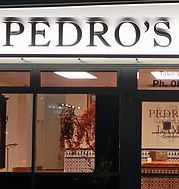

Restaurants and Bars
Over 18 tonnes of crystal clear ice architecture, extreme temperatures at MINUS 5º ICE BAR Queenstown and colder, live life like a penguin! Dressed like an Eskimo you get to explore ice furniture, hand made ice carvings and even drink from ice glasses filled with our famous delicious cocktails. A family experience you will never forget, a pre dinner chilly cocktail, or a ‘cool’ start to a lively night on the town.
Sake Bar Restaurant
A teppan and sake bar - Japanese restaurant located in central Queenstown offers a fun and intimate dining experience. Chef Minori Yoneda presents traditional Japanese cuisine from the teppan grill and has assembled some contemporary interpretations of Japanese classics. Open for lunch and dinner to late night grazing - Tanoshi, meaning 'fun' will entertain and delight.
Taco Medic is a collaboration of the fresh and vibrant cultures of New Zealand and Mexico. Our flavour formulations come from the Mexican Taco guru , known in Mexico as the Taco Medic. Authentic Mexican Masa Tortillas and Salsas filled with New Zealand’s best produce from land to sea. One man’s passion for Tacos of the highest quality, being shared with the world, starting here in Queenstown New Zealand.

"If you want to see a slice of life, Cowboy life New Zeeland style, then you'll be seeing us in Searle Lane, just off the Mall, just ask some local dudes to point you our way cos' if you leave Queenstown without doing the Cowboy thing you really never arrived. Cowboy up pardner, let's do it"
of Lamb

Experience the very best New Zealand lamb. With a 4.5 star rating on TripAdvisor, Pedro's House of Lamb boasts sensational lamb, impressive portion sizes, an easy to find locale, and wonderful, friendly service. Definitely a great place to grab a bite!
Tourist Attractions
Time Walk
The Queenstown Hill Time Walk is a demanding walk uphill, ending with fantastic views of Lake Wakatipu, the Remarkables, and other mountains. This Queenstown walk is easily accessible from Queenstown city centre. It is a pretty demanding walk up a hill that offers great views of Lake Wakatipu, the Remarkables, Cecil Peak, Walter Peak, and other mountains North and South of Queenstown.

The track begins among Douglas fir on Skyline Access Road/Tiki Trail. At about 800m altitude, you enter alpine tussocks and shrubs, climbing to the 1326m Ben Lomond Saddle (Ben Lomond Station). The track gets steeper and rougher as it approaches Ben Lomond's 1,748m summit. In fine weather, the view includes Mounts Earnslaw/Pikirakatahi and Aspiring/Tititea.
Nestled in the heart of rural Wakatipu, the gardeners draw their inspiration from the spectacular alpine landscape – ever changing with the distinctive seasons. Each garden has it’s own unique style, whether it be cottage garden, New Zealand native garden, orchard and vegetable garden or semi formal English style garden. Many gardens also boast wonderful water features . There is a wonderful range for guests to enjoy.
Imagine a land where birds are boss. Where there lives nothing with fur, four legs or teeth. Where mammals have never roamed and the vast forests flock and chorus with birdlife. This is New Zealand. The Paradise of the Birds. At the Kiwi Birdlife Park there are so many ways you can experience the special world of birds and ancient reptiles.
Ski Area
The famous Remarkables mountain range is home to The Remarkables ski field, an easy 35 minute drive from downtown Queenstown. A true alpine mountain experience, The Remarkables offers terrain and facilities to suit everyone from first timers to seasoned, expert skiers and snowboarders.
Website Design © Copyright 2016 Aquila Halpé. Click here to contact the administrator.